O-GNN
论文标题：O-GNN：Incorporating Ring Priors into Molecular Modeling
发表期刊：ICLR 2023
论文：
代码：github
正文
Abstract
1.以往分子建模GNN模型的问题
- 不能显式考虑化合物(compound)中的环(ring)，限制了模型的表达能力。
2.本文工作——O-GNN摘要
- 提出GNN的一个环加强(ring-enhanced)的新变种（命名为O-GNN），在化合物的原子、化学键以外，对环信息进行了显式建模。
- 每个环分别由一个隐向量进行表征，参与原子和化学键的表征，并根据原子表征、化学键表征进行迭代更新。
- 理论分析证明：只需一个层，O-GNN即可区分位于不同环上的同构子图(isomorphic subgraph)；而传统GNN需要多个层进行区分。因此，O-GNN表达能力更强。
3.实验结果简述
- 在11个公开数据集上表现优秀。
- 在PCQM4Mv1 benchmark上，超越之前的KDDCup最佳解决方案，获得新的SOTA验证结果。
- 在DrugBank上的药物-药物相互作用预测任务上，取得新的SOTA结果。
- 在分子性质预测、逆合成预测任务上，超越不含环建模的baseline。
1 Introduction
1.环状化合物简介
- 定义：至少包含一个环的化合物。
- 占比：在作者对
PubChem的109M种化合物的统计中，\(90\%\) 以上化合物至少含有一个环。
2.GNN分子建模研究进展
GNN在药物作用中的重要性Stokes et al.(2020)训练GNN以预测大肠杆菌(Escherichia coli)的生长抑制，并最终发现SARS-CoV-2的可能抗体。GNN广泛应用于药物性质预测(Rong et al., 2020)、药物-靶标相互作用建模(Torng & Altman, 2019)、逆合成(Chen & Jung, 2021)等。
- 以往工作的问题
- 上述工作均没有在
GNN中显式建模环信息。 - 从应用者角度看，对于上述任务，由重要特征缺失。
- 从机器学习角度，
Loukas(2020)指出宽度、深度乘积不够大时，现有的基于消息传递的GNN不能正确捕捉环信息。 - 因此，化合物中的环信息没有得到充分利用。
- 上述工作均没有在
3.O-GNN
- 表征的更新
- 每个层次时序化更新：边信息、结点信息和环信息。
- 消息传递、非线性的引入
- 消息传递：使用自注意力层。
- 非线性引入：使用前馈层。
- 实验设计
- 分子性质预测
- 在
PCQM4Mv1数据集上进行实验，预测HOMO-LUMO能隙：在验证集上超过KDDCup。 - 在
MoleculeNet上的六个数据集进行实验：超过了无环GNN的性能。 - 在
FS-Mol数据集上进行实验：证明建模环信息可以提升精确度。
- 在
- 药物-药物相互作用预测
DrugBank基于前人设定进行测试，获得SOTA结果。
- 逆合成
- 将
O-GNN用于LocalRetro，在USPTO-50k上获得显著的性能提升。
- 将
- 分子性质预测
2 Method
2.1 Notation and Preliminaries
-
符号约定
- 图\(G = (V, E)\), \(V\)为顶点集，\(E\)为边集，\(R\)维环的集合。
- \(V = \{v_1, \cdots, v_{|V|}\}, E = \{e_{i,j}\}\)表示顶点\(v_i,v_j\)连成的边。
- 用\(i\)简记顶点\(v_i\)；用\((v_i, v_j)\)表示边\(e_{ij}\)。
- 顶点\(i\)的邻域：\(N(i) = \{v_j|e_{ij}\in E\}\)
- \(R = \{r_1, \cdots, r_n\}\)，其中\(r_i\)为单环。
- \(R(i), R(e_{ij})\)分别表示：原子\(i\)，边\(e_{ij}\)所处的单环集合。
- 举例
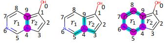
-
原子表征更新公式
- 公式：\(h_i' = Update(h_i, Aggregate(h_j|j \in N(i)))\)
- \(h_i, h_i'\)分别为原子\(i\)更新前后的表征。
2.2 Model
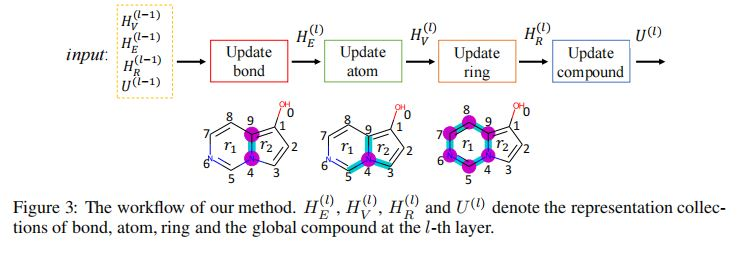
- 设\(L\)为模型层数，\(U^{(l)}\)为第\(l\)层的复合物表征。
- 表征初始化
- 结点表征的初始化：通过可学习的
embedding层，初始化\(h_i^{(0)}\)，表示原子的下列信息：- 原子类型
- 手性
degree number- 形式电荷
- 杂化类型
- 其余信息
- 边表征的初始化：通过可学习的
embedding层，初始化\(h_{ij}^{(0)}\)，表示原子的化学键类型、立体异构、是否共轭。 - 化合物表征的初始化：通过可学习
embedding层。 - 环表征的初始化：连接(
nonlinearity)原子、边的embedding，并使用非线性层进行变换。
- 结点表征的初始化：通过可学习的
- 表征更新：对于结点、化学键、环和化合物的表征，进行时序化更新。
- 边表征：由连接的原子、边所处的环，以及上一层的化合物表征进行更新：
\(h_{ij}^{(l)} = h_{ij}^{(l - 1)} + MLP(h_i^{(l - 1)}, h_j^{(l - 1)}), h_{ij}^{(l - 1)}, \frac{\sum}h_i^{(l - 1)}{r \in R(e_{ij})h_r^{(l - 1)}}{|R(e_{ij})|}, U^{(l - 1)} \cdots (2)\) - 原子表征：使用注意力模型，自适应地将边表征聚合到中心原子。
\(\bar{h}_{i}^{(l)} = \sum_{j \in N(i)} \alpha_{j}W_vconcat(h_{ij}^{(l - 1)}, h_j^{(l - 1)})\)
\(\alpha_j ∝ exp(a^TleakyReLU(W_qh_i^{(l - 1)} + W_kconcat(h_j^{(l - 1)}, h_{ij}^{(l)})))\cdots (3)\)
\(h_{i}^{(l)} = h_{i}^{(l - 1)} + MLP(h_i^{(l - 1)}) + MLP(h_i^{(k - 1)}, \bar{h}_i^{(l)}, \frac{1}{|R(v_i)|}\sum_{r \in R(v_i)}h_r^{(l - 1)}, U^{(l - 1)})\)
等式(3)中：\(W\)的参数通过学习得到，concat表示将输入向量连接为一个长向量。 - 环表征：使用
MLP更新
\(h_{r}^{(l)} = h_{r}^{(l - 1)} + MLP(h_{r}^{(l)}, \sum_{v_i \in V(r)}h_i^{(l)}, \sum_{e_{ij} \in E(r)}h_{ij}^{(l)}, U^{(l - 1)})\) - 化合物表征：
\(U^{(l)} = U^{(l - 1)}+MLP(\frac{1}{|V|}\sum_{i = 1}^{|V|}h_i^{(l)}, \frac{1}{|E|}\sum_{i, j}^{}h_{ij}^{(l)}, \frac{1}{|R|}\sum_{r \in R}^{|V|}h_r^{(l)}, U^{(l - 1)})\)
- 边表征：由连接的原子、边所处的环，以及上一层的化合物表征进行更新：
- 输出层次
- 图表征与图分类：在\(L\)个
O-GNN层的堆叠之后，通过简单的平均汇聚，即\(h_{G} = \frac{1}{|V|}\sum_{i = 1}^{|V|}h_i^{(L)}\)，获得图表征，可用于图分类任务。 - 结点分类：对于结点分类任务，可在\(h_{i}^{(L)}\)处添加分类头。
- 图表征与图分类：在\(L\)个
2.3 Theoretical Analysis
- 【定义1（\(k\)-邻域节点）】
节点\(u\)为结点\(v\)的\(k\)邻域节点，当且仅当\(u, v\)之间存在一条长度不超过\(k\)的路径。 - 【定义2（\(k\)-邻域子图）】
由节点\(u\)的所有\(k\)邻域节点，及这些节点之间所有边，构成关于\(u\)节点的\(k\)邻域子图。 - 【定义3（等值图）】
若两个图的顶点集\(V_1, V_2\)之间存在映射\(P:V_1 \rightarrow V_2\)，使得：
（1）边的映射得以保持不变：
\(e(u, v) \in E_1 \Leftrightarrow e(P(u), P(v)) \in E_2\)
（2）边和结点的函数值得以保持不变：
\(f_1()u = f_2(P(u)), f_2(v)\)
3 Experiments
- 实验任务
- 图分类任务：分子性质预测、药物-药物相互作用预测
- 节点/链接预测任务：逆合成预测
3.1 Application to Molecular Property Prediction
3.2 Application to DDI Prediction
3.2
3.3
4 Conclusion and Future Work
- 未来工作
- 结合预训练获得更强的
O-GNN。 - 在训练数据量非常首先的情况下，进一步改善模型。
- 高效地识别更复杂架构，并将其融入表征。
- 结合预训练获得更强的
附录
A Detailed Experiment Configurations
- 分子性质预测任务超参数设置
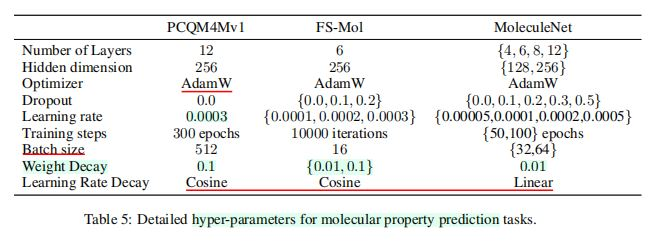 DDI任务超参数设置
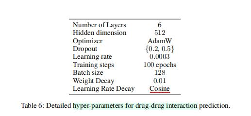- 逆合成任务超参数设置
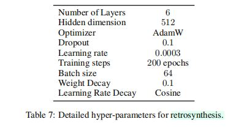
B Proofs of the Two Propositions
（略，见原文附录部分）
C More Ablation Study
C.1 Node Representation Pooling v.s. Compound Representation
- 评估数据集为
PCQM4Mv1，以MAE(Mean Absolute Errors)作为衡量标准。结果表明：结点平均池化比化合物表征效果更好。
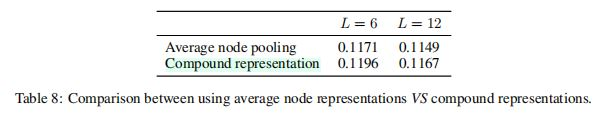
C.2 Attentively Aggregate the Information from Rings
- 另一个含注意力机制的环表征变种
- 使用
MLP更新环表征的数学公式：
\(h_r^{(l)} - h_r^{(l - 1)} + MLP(h_r^{(l - 1)}, \sum_{v_i \in V(r)}\alpha_{i}^{(l)}h_i^{(l)}, \sum_{e_{i, j} \in E(r)}\beta_{ij}^{(l)}h_{ij}^{(l)}, U^{(l - 1)})\cdots (9)\) - 使用注意力机制，更新结点、边表征：
\(\alpha_i^{(l)} ∝ exp(W_{ql}h_r^{(l - 1)} + W_{kl}h_i^{(l)})\) \(\beta_{ij}^{(l)} ∝ exp(W_{q2}h_r^{(l - 1)} + W_{k2}h_{ij}^{(l)}) \cdots (10)\)
- 使用
- 实验结果：使用
MLP更新环表征，虽然结构简单，但效果比注意力机制更好。
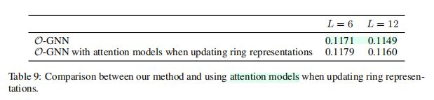
C.3 O-GNN with BRICS
- 环表征可视为一种特殊的保守序列(
motif) - 使用
BRICS模型将分子分解为不同的片段，并研究用motif表征替代环表征带来的影响。 - 实验结果：使用
BRICS motif表征，效果不如环表征。
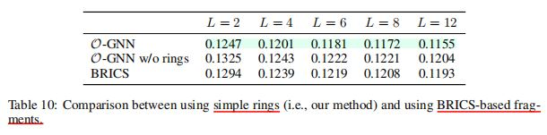
C.4 More Comparison Between O-GNN and O-GNN w/o Rings
- 研究产物分子环数不同时，是否带有环表征的
O-GNN分别表现如何。 - 结果：随着环数的增加，带有环表征的
O-GNN表现愈发优于不带环表征的O-GNN。
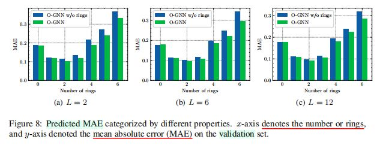
C.5 额外讨论
- 过度平滑问题
- 实际上，过度平滑问题不一定会发生；只要模型被证明表达能力足够，并且训练方法正确，模型即可按照线性收敛率收敛到全局最大值，并获得较高的精确度。
- \(k\)邻域的建模
- 若需要精确建模\(k\)邻域（为保证表达能力，不进行参数共享），则需分别使用\(k\)个网络，对于\(1\)到\(k\)个邻域的结点信息进行处理。
- 上述方法在\(k\)较大时，参数显然大于参数量不依赖于\(k\)值的
O-GNN；且分子中环的最大规模从\(3\)到\(53\)不等，因此最优超参数\(k\)难以确定。
- 模型不变性限制
- 原子、化学键、环均具有不变性。
- 特别地，原子的类型、关联电子数、邻居数目等均为不变性特征。
- 环表征通过原子、边表征获得，也具有不变性。
- 不具有不变性的特征（如：坐标）未被编码。
- 收敛速度比较
- 基于
PCQM4Mv1数据集，比较6/12层含/不含环信息的O-GNN。 - 实验结果
- 训练
6层有环信息O-GNN共175个轮次，相当于训练12层无环信息的O-GNN共275个轮次。 - 训练
12层有环信息O-GNN共75个轮次，相当于训练12层无环信息的O-GNN共275个轮次。
- 训练
- 结论：带环信息的
O-GNN收敛速度更快。
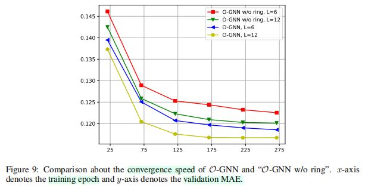
- 基于
- 基于不同参数量的比较
- 尽管参数量保持一致，
O-GNN的表现仍然胜过了不带环信息的O-GNN。
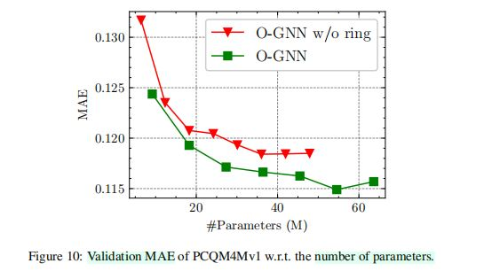
- 尽管参数量保持一致，
- 在
MoleculeNet上的预训练baseline- 使用基于
scaffold的数据分割方式。 O-GNN没有在无标签的分子上进行预训练。- 结果：从平均分数看，
O-GNN和强大的baseline表现类似(comparable)，表明了方法的有效性。
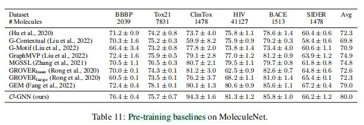
- 使用基于
D Related Work Summary
GCN- 通过邻接矩阵、度数矩阵，对邻域信息进行聚合。
- 通过线性变换、非线性激活层，更新聚合信息。
GraphSAGE- 通过逐元素的平均，聚合邻域信息。
GAT- 将注意力机制引入
GNN，自适应地更新邻域表征。
- 将注意力机制引入
GATv2- 改善自注意力机制，使之表达能力更强。
Xu et al.(2018)的工作- 设计一个简单的聚合函数，包含一个\(\epsilon\)参数，以及
MLP，与Weisfeiler-Lehman图同构测试一样强大。
- 设计一个简单的聚合函数，包含一个\(\epsilon\)参数，以及
- 虚拟节点图增强手段
- 使用虚拟节点，捕捉图的全局信息，以实现图的增强。
- 虚节点：连接其余所有节点，在训练过程中由所有节点表征进行联合更新。
- 上述工作的问题
GNN中没有显式融合环信息。